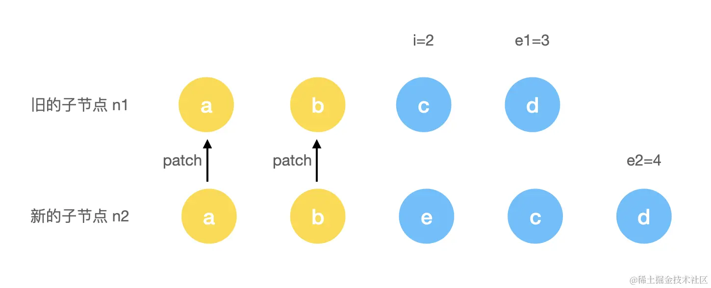
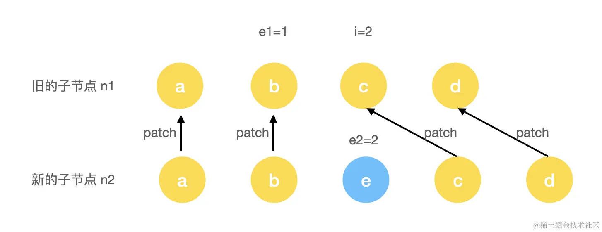
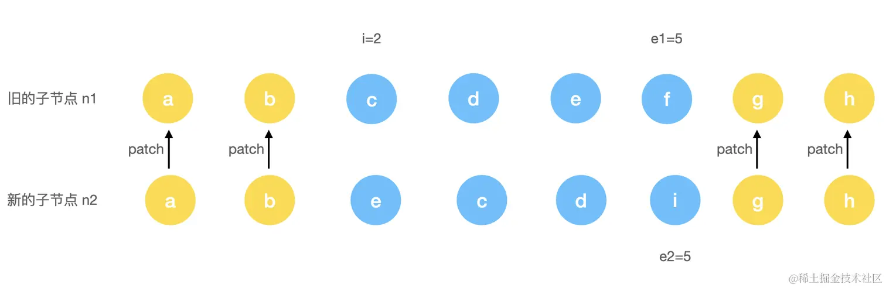
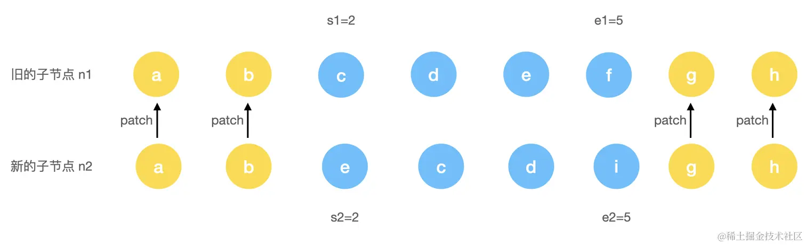
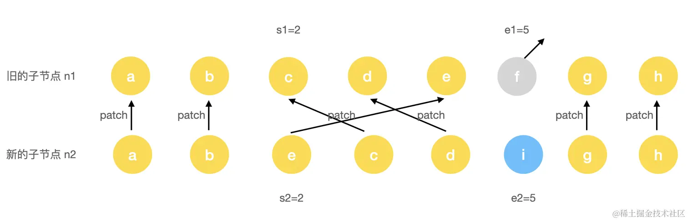
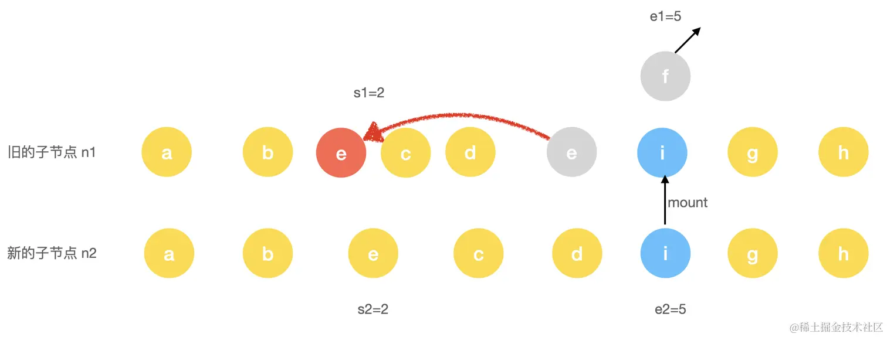

前言
上一节，我们介绍了关于新旧子节点不同为数组的情况下的更新过程，下面将接着上节的内容继续介绍如果子节点都是数组的情况，那么更新过程会变成什么样呢？
1. 从头比对
Vue 3 的 diff 算法第一步就是进行新老节点从头比对的方式来判断是否是同类型的节点：
js复制代码const patchKeyedChildren = (c1, c2, container, parentAnchor, parentComponent, parentSuspense, isSVG, optimized) => {
let i = 0
const l2 = c2.length
// 旧节点的尾部标记位
let e1 = c1.length - 1
// 新节点的尾部标记位
let e2 = l2 - 1
// 从头部开始比对
// (a b) c
// (a b) d e
while (i <= e1 && i <= e2) {
const n1 = c1[i]
const n2 = (c2[i] = optimized
? cloneIfMounted(c2[i] as VNode)
: normalizeVNode(c2[i]))
// 如果是 sameVnode 则递归执行 patch
if (isSameVNodeType(n1, n2)) {
patch(n1, n2, container, parentAnchor, parentComponent, parentSuspense, isSVG, optimized)
} else {
break
}
i++
}
}
这里有几个变量需要说明一下：
i代表的是头部的标记位；e1代表的是旧的子节点的尾部标记位；e2代表的是新的子节点的尾部标记位。
从头比对就是通过不断移动 i 这个头部标记位来判断对应的节点是否是 sameVnode。如果是，则进行递归 patch 操作，递归 patch 就是继续进入到我们上一小节的内容。如果不满足条件，则退出头部比对，进入从尾比对流程。
2. 从尾比对
js复制代码const patchKeyedChildren = (c1, c2, container, parentAnchor, parentComponent, parentSuspense, isSVG, optimized) => {
let i = 0
const l2 = c2.length
// 旧节点的尾部标记位
let e1 = c1.length - 1
// 新节点的尾部标记位
let e2 = l2 - 1
// 从头部开始比对
// ...
// 从尾部开始比对
// a (b c)
// d e (b c)
while (i <= e1 && i <= e2) {
const n1 = c1[e1]
const n2 = (c2[i] = optimized
? cloneIfMounted(c2[i] as VNode)
: normalizeVNode(c2[i]))
// 如果是 sameVnode 则递归执行 patch
if (isSameVNodeType(n1, n2)) {
patch(n1, n2, container, parentAnchor, parentComponent, parentSuspense, isSVG, optimized)
} else {
break
}
e1--
e2--
}
}
从尾比对就是通过不断移动新旧节点 e1 和 e2 的尾部指针来判断对应的节点是否是 sameVnode。如果是则进行递归 patch 操作，递归 patch 也是继续进入到我们上一小节的内容。如果不满足条件，则退出头部比对，进入后续流程。
3. 新增节点
假设我们有这样一个旧列表：
html复制代码<ul>
<li key="a">a</li>
<li key="b">b</li>
<li key="c">c</li>
<li key="d">d</li>
</ul>
新列表的变更是在中间插入了一个新节点：
html复制代码<ul>
<li key="a">a</li>
<li key="b">b</li>
<li key="b">e</li>
<li key="c">c</li>
<li key="d">d</li>
</ul>
那么先进入第一步头部比对流程：

第一步执行时，会完成对 a 和 b 头部这 2 个节点进行 patch。当 i = 2 时，由于此时的 c 和 e 节点的 key 不一样，所以退出了头部比对流程，进入尾部比对：

第二步执行时，会完成对 c 和 d 尾部这 2 个节点进行 patch。当 e1 = 1 时，由于i > e1，所以退出了尾部比对流程。肉眼可见，此时的情况是新节点多了个 e 节点的情况，所以我们需要添加多余的剩余节点：
javascript复制代码const patchKeyedChildren = (c1, c2, container, parentAnchor, parentComponent, parentSuspense, isSVG, optimized) => {
let i = 0
const l2 = c2.length
// 旧节点的尾部标记位
let e1 = c1.length - 1
// 新节点的尾部标记位
let e2 = l2 - 1
// 从头部开始必须
// ...
// 从尾部开始比对
// ...
// 如果有多余的新节点，则执行新增逻辑
if (i > e1) {
if (i <= e2) {
const nextPos = e2 + 1
const anchor = nextPos < l2 ? c2[nextPos].el : parentAnchor
while (i <= e2) {
// 新增新节点
patch(null, c2[i], container, anchor, parentComponent, parentSuspense, isSVG)
i++
}
}
}
}
4. 删除节点
类比新增节点的情况，假设我们有这样一个旧列表：
html复制代码<ul>
<li key="a">a</li>
<li key="b">b</li>
<li key="b">e</li>
<li key="c">c</li>
<li key="d">d</li>
</ul>
新列表的变更是在中间删除了一个旧节点：
html复制代码<ul>
<li key="a">a</li>
<li key="b">b</li>
<li key="c">c</li>
<li key="d">d</li>
</ul>
那么先进入第一步头部比对流程：
第一步执行时，会完成对 a 和 b 头部这 2 个节点进行 patch。当 i = 2 时，由于此时的 e 和 c 节点的 key 不一样，所以退出了头部比对流程，进入尾部比对：
第二步执行时，会完成对 c 和 d 尾部这 2 个节点进行 patch。当 e2 = 1 时，由于i > e2，所以退出了尾部比对流程。肉眼可见，此时的情况是新节点少了个 e 节点的情况，所以我们需要删除节点 e：
js复制代码const patchKeyedChildren = (c1, c2, container, parentAnchor, parentComponent, parentSuspense, isSVG, optimized) => {
let i = 0
const l2 = c2.length
// 旧节点的尾部标记位
let e1 = c1.length - 1
// 新节点的尾部标记位
let e2 = l2 - 1
// 从头部开始比对
// ...
// 从尾部开始比对
// ...
// 如果有多余的新节点，则执行新增逻辑
// ...
// 如果有多余的旧节点，则执行卸载逻辑
else if (i > e2) {
while (i <= e1) {
// 卸载节点
unmount(c1[i], parentComponent, parentSuspense, true)
i++
}
}
}
5. 未知子序列
经过步骤 1、2 的操作后如果可以直接进入步骤 3、4 那是非常方便的操作了，直接进行多余删除缺少新增的操作。如果步骤 3、4 的条件都不满足的情况，那么 Vue 是如何处理的呢？再来看这样一个例子。
旧子节点：
html复制代码<ul>
<li key="a">a</li>
<li key="b">b</li>
<li key="c">c</li>
<li key="d">d</li>
<li key="e">e</li>
<li key="f">f</li>
<li key="g">g</li>
<li key="h">h</li>
</ul>
新子节点：
html复制代码<ul>
<li key="a">a</li>
<li key="b">b</li>
<li key="e">e</li>
<li key="c">c</li>
<li key="d">d</li>
<li key="i">i</li>
<li key="g">g</li>
<li key="h">h</li>
</ul>
此时经过步骤 1、2 后的结果可以表示为如下图：

这种情况，既不满足 i > e1 也不满足 i > e2 的条件，所以对于这种情况应该如何处理呢？我们知道 DOM 更新的性能优劣关系大致为：属性更新 > 位置移动 > 增删节点。所以，我们需要尽可能地复用老节点，做属性更新，减少移动次数和增删节点的次数。
那么上述更新策略假设有这样 2 种方式。
c和d节点不动，只做patch，e节点patch后移动到c节点前面，删除f节点，然后在d节点后面添加i节点。e节点不动，只做patch，c和d节点patch后移动到e节点后面，删除f节点，然后在d节点后面添加i节点。
根据上面的性能优劣关系，我们需要尽可能多地保障最多的公共子节点位置不变，只做 patch 更新。然后找出多余的节点删除，找出新的节点添加，找出有需要移动的节点移动。
当需要进行移动操作时，那么这个问题就变成了求取新旧子树上的最长公共子序列。当知道了最长公共子序列，所有的操作就可以简化为：
- 如果节点在新节点中，不在旧节点中，那么新增节点。
- 如果节点在旧节点中，不在新节点中，那么删除节点。
- 如果节点既在旧节点中，也在新节点中，那么更新。
- 如果节点需要移动，那么求取最长公共子序列后，进行最小位置移动。
接下来看看 Vue 是如何实现上述能力的。
构造新老节点位置映射 keyToNewIndexMap
js复制代码// 旧子序列开始位置
const s1 = i
// 新子序列开始位置
const s2 = i
// 5.1 构建 key:index 关系索引 map
const keyToNewIndexMap = new Map()
for (i = s2; i <= e2; i++) {
const nextChild = (c2[i] = optimized
? cloneIfMounted(c2[i] as VNode)
: normalizeVNode(c2[i]))
if (nextChild.key != null) {
keyToNewIndexMap.set(nextChild.key, i)
}
}
这里的新旧子节点开始位置通过 s1 和 s2 作为标记，然后开始进行构造新老节点位置映射，这里新节点 key -> index 关系的索引图是保存在了 keyToNewIndexMap 这样一个 Map 结构中，其中的 key 就是新节点的 key 值，而 value 则是旧节点对应的位置关系 index。这一步完成后，生成的 keyToNewIndexMap 结果可以表示为：
js复制代码keyToNewIndexMap = {e: 2, c: 3, d: 4, i: 5}

继续处理旧节点
有了上面的 keyToNewIndexMap 新节点的索引图，接下来我们就需要遍历旧的节点，寻找旧节点在新节点中对应的位置信息，如果找到则做更新，找不到则移除。
js复制代码// 记录新节点已更新的数目
let patched = 0
// 记录新节点还有多少个没有更新
const toBePatched = e2 - s2 + 1
// 标记是否有必要进行节点的位置移动
let moved = false
// 标记是否有节点进行了位置移动
let maxNewIndexSoFar = 0
// 记录新节点在旧节点中的位置数组
const newIndexToOldIndexMap = new Array(toBePatched)
// newIndexToOldIndexMap 全部置为 0
for (i = 0; i < toBePatched; i++) newIndexToOldIndexMap[i] = 0
// 开始遍历旧子节点
for (i = s1; i <= e1; i++) {
// prevChild 代表旧节点
const prevChild = c1[i]
// 还有多余的旧节点，则删除
if (patched >= toBePatched) {
unmount(prevChild, parentComponent, parentSuspense, true)
continue
}
// 记录旧节点在新节点中的位置数组
let newIndex = keyToNewIndexMap.get(prevChild.key)
// 如果旧节点不存在于新节点中，则删除该节点
if (newIndex === undefined) {
unmount(prevChild, parentComponent, parentSuspense, true)
} else {
// newIndexToOldIndexMap 中元素为 0 表示着新节点不存在于旧节点中
newIndexToOldIndexMap[newIndex - s2] = i + 1
// 默认不移动的话，所有相同节点都是增序排列的
// 如果有移动，必然出现节点降序的情况
if (newIndex >= maxNewIndexSoFar) {
maxNewIndexSoFar = newIndex
} else {
moved = true
}
// 更新节点
patch(
prevChild,
c2[newIndex] as VNode,
container,
null,
parentComponent,
parentSuspense,
isSVG,
slotScopeIds,
optimized
)
// 记录更新的数量
patched++
}
}
我们简单来总结一下这一步的一些核心操作。
Step 1： 定义一个初始长度为新节点数组长度且默认值全为 0 的变量 newIndexToOldIndexMap，记录新节点中的元素在旧节点中的位置关系。
Step 2： 遍历旧的节点数组，如果旧节点不存在于新节点中，则表示旧的节点其实是多余的节点，需要被移除。
Step 3： 如果旧节点存在于新节点数组中，则将它在旧子序列中的位置信息记录到 newIndexToOldIndexMap 中，同时根据 newIndex 是否大于 maxNewIndexSoFar 来判断是否有节点移动。
这里我们结合个例子来说明。假如旧节点信息为 abc、新节点为 cab，当旧节点遍历到 c 节点时，此时的newIndex 的值为 0 而 maxNewIndexSoFar 的值为 2。这就意味着此时的 c 节点并不是升序位于 ab 节点之后的，因此需要标记为有需要移动的节点。
Step 4： 更新相同节点。
经过上面的一系列操作，我们最终得到了一个 newIndexToOldIndexMap 和一个 moved 两个变量 ，这两个变量将在下文的移动和新增节点中被使用。
我们来看一下示例处理后的结果，如下图所示：

此时 c、d、e 因为是相同节点，所以进行 patch 更新，f 节点因为不存在于新的索引中，所以被删除。最后得到的 newIndexToOldIndexMap 数据结构大致如下：
js复制代码newIndexToOldIndexMap = [5, 3, 4, 0]
而且此时的 moved 也被标记为 true。
移动和增加新节点
通过前面的操作，我们完成了对旧节点的移除和更新，那么接下来就是需要进行对节点的移动和新节点的增加了：
js复制代码// 根据 newIndexToOldIndexMap 求取最长公共子序列
const increasingNewIndexSequence = moved
? getSequence(newIndexToOldIndexMap)
: EMPTY_ARR
// 最长公共子序列尾部索引
j = increasingNewIndexSequence.length - 1
// 从尾部开始遍历
for (i = toBePatched - 1; i >= 0; i--) {
const nextIndex = s2 + i
const nextChild = c2[nextIndex]
const anchor = nextIndex + 1 < l2 ? c2[nextIndex + 1].el : parentAnchor
// 如果新子序列中的节点在旧子序列中不存在，则新增节点
if (newIndexToOldIndexMap[i] === 0) {
patch(null, nextChild, container, anchor, parentComponent, parentSuspense, isSVG)
} else if (moved) {
// 如果需要移动且
// 没有最长递增子序列
// 当前的节点不在最长递增子序列中
if (j < 0 || i !== increasingNewIndexSequence[j]) {
move(nextChild, container, anchor, MoveType.REORDER)
} else {
j--
}
}
}
Step 1： 这里针对 moved 是 true 的情况，则会进行求取最长递增子序列的索引操作。
什么是最长递增子序列？简单来说指的是找到一个特定的最长的子序列，并且子序列中的所有元素单调递增。本例中，newIndexToOldIndexMap = [5, 3, 4, 0] 最长递增子序列的值为 [3, 4], 对应到 newIndexToOldIndexMap 中的索引即 increasingNewIndexSequence = [1, 2]。关于具体的算法细节，我们后面再详细探讨。
Step 2： 从尾部开始遍历新的子序列，在遍历的过程中，如果新子序列中的节点在旧子序列中不存在，也就是 newIndexToOldIndexMap[i] === 0，则新增节点。
Step 3： 判断是否存在节点移动的情况，如果存在的话则看节点的索引是不是在最长递增子序列中，如果不在，则将它移动到锚点的前面，否则仅移动最长子序列的尾部指针。
针对上述例子中，新的子序列为 e,c,d,i。最长递增子序列的索引为 [1, 2]。开始遍历到 i 节点时，因为 newIndexToOldIndexMap[i] = 0 所以新增，然后遍历到 c,d 节点，因为存在于最长子序列中，所以最后 j = -1。当遍历到 e 节点时，此时 j = -1 并且 e 节点不存在于最长递增子序列索引中，索引最后一步就是把节点 e 进行一次移动：
js复制代码move(nextChild, container, anchor, MoveType.REORDER)
其中 anchor 是参照物，记录着上一次更新的节点信息，也就是节点 c 的信息，所以这里的意思就是将节点 e 移动到节点 c 前面。
至此，完成了所有节点的增、删、更新、移动的操作，此次操作结果如下：

最长递增子序列
求最长递增子序列是 LeetCode 上的一道经典算法题，原题：300. 最长递增子序列。
什么是上升子序列？简单来说指的是找到一个特定的最长的子序列，并且子序列中的所有元素单调递增。
假设我们的序列为 [5, 3, 4, 9] ，那么最长的递增子序列是 [3, 4]。
那么如何找到最长的递增子序列呢？Vue 内部使用的是一套 贪心 + 二分查找 的算法，关于贪心和二分查找的解释如下。
- 贪心算法：贪心算法在每一步都做出了当时看起来最佳的选择，也就是说，它总是做出局部最优的选择，寄希望这样的选择能导致全局最优解。leetCode 455. 分发饼干。
- 二分查找：每次的查找都是和区间的中间元素对比，将待查找的区间缩小为一半，直到找到目标元素，或者区间被缩小为 0（没找到）。leetCode 704. 二分查找。
那么这里我们再结合一下贪心算法的思想，在求取最长上升子序列时，对于同样长度是二的序列 [2, 3] 一定比 [2, 5] 好，因为要想让子序列尽可能地长，那么上升得尽可能慢，这样潜力更大。
所以我们可以创建一个临时数组，用来保存最长的递增子序列，如果当前遍历的元素大于临时数组中的最后一个元素（也就是临时数组的最大值）时，那么将其追加到临时数组的尾部，否则，查找临时数组，找到第一个大于该元素的数并替换它，这样就保证了临时数组上升时最慢的。因为是单调递增的序列，我们也可以在临时数组中用二分查找，降低时间复杂度。
以输入序列 [1, 4, 5, 2, 8, 7, 6, 0] 为例，根据上面算法的描述，我们大致可以得到如下的计算步骤：
[1][1, 4][1, 4, 5][1, 2, 5][1, 2, 5, 8][1, 2, 5, 7][0, 2, 5, 6]
可以看到，如果单纯地按照上述算法的模式，得到的结果的长度虽然一致，但位置顺序和值并不符合预期，预期结果是 [1, 4, 5, 6]。那么在 Vue 中是如何解决这个顺序和值错乱的问题呢？
我们一起来看看源码的实现：
js复制代码function getSequence (arr) {
const p = arr.slice()
const result = [0]
let i, j, u, v, c
const len = arr.length
for (i = 0; i < len; i++) {
const arrI = arr[i]
// 排除等于 0 的情况
if (arrI !== 0) {
j = result[result.length - 1]
// 与最后一项进行比较
if (arr[j] < arrI) {
// 存储在 result 更新前的最后一个索引的值
p[i] = j
result.push(i)
continue
}
u = 0
v = result.length - 1
// 二分搜索，查找比 arrI 小的节点，更新 result 的值
while (u < v) {
// 取整得到当前位置
c = ((u + v) / 2) | 0
if (arr[result[c]] < arrI) {
u = c + 1
}
else {
v = c
}
}
if (arrI < arr[result[u]]) {
if (u > 0) {
// 正确的结果
p[i] = result[u - 1]
}
// 有可能替换会导致结果不正确，需要一个新数组 p 记录正确的结果
result[u] = i
}
}
}
u = result.length
v = result[u - 1]
// 回溯数组 p，找到最终的索引
while (u-- > 0) {
result[u] = v
v = p[v]
}
return result
}
其中 result 中存储的是长度为 i 的递增子序列最小末尾值的索引。p 是来存储在每次更新 result 前最后一个索引的值，并且它的 key 是这次要更新的 result 值：
js复制代码 // 插入
p[i] = j
result.push(i)
// 替换
p[i] = result[u - 1]
result[u] = i
对于上述的实例，我们在进行最后一步回溯数组 p 之前，得到的数据机构如下：
js复制代码result = [ 0, 3, 2, 6 ] // => [0, 2, 5, 6]
p = [1, 0, 1, 0, 2, 2, 2]
从 result 最后一个元素 6 对应的索引 6 开始回溯，可以看到 p[6] = 2，p[2] = 1，p[1] = 0，所以通过对 p 的回溯，得到最终的 result 值是 [0, 1, 2, 6]，也就找到最长递增子序列的最终索引了。
总结
至此我们介绍完了关于 Vue3 的 diff 算法。接下来小伙伴们可以思考两个问题：
- 为什么
Vue 3不再沿用之前Vue 2的双端diff算法而改成现在的这种模式呢？ - 我们使用
v-for编写列表时为什么不建议使用index作为key?